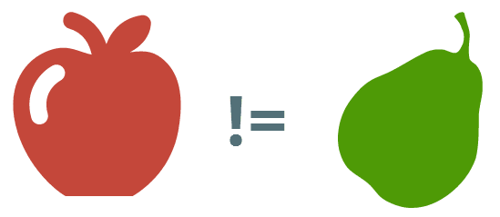
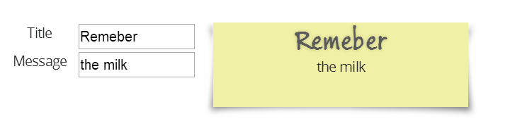

Das JavaScript-Framework Knockout.js konzentriert sich klar auf eine Aufgabe. Diese ist das Bereitstellen einer MVVM-Engine. Zusätzliche Funktionalitäten wie modularer Code oder clientseitiges Routing müssen durch weitere Bibliotheken hinzugefügt werden. Gerade für größere SinglePage Anwendungen sind zahlreiche weitere JavaScript-Libraries nach und nach hinzuzufügen. Wer auf Knockout.js als Technologie für eine SPA (Single-Page Application) gesetzt hat, kann durch den Zechnologie-Zoo mitunter etwas ernüchtert sein.
Im Kontrast hierzu steht AngularJS. Dieses Framework bietet einen viel größeren Funktionsumfang. Es sind viele Funktionalitäten vorhanden, die für eine homogene SPA-Architektur verwendet werden können. AngularJS schickt sich an "Marktführer" für SPAs zu werden und diese Position dank der Unterstützung von Google auch zu behaupten.
In dieser Session (und mit dem Ihnen hier vorliegenden Handout) werden Knockout und AngularJS miteinander vergleichen. Anhand ausgewählter Schwerpunkte sollen jeweilige Vorteile und Schwächen herausgearbeitet und mit Code-Beispielen belegt werden. Johannes Hoppe beleuchtet hierbei stets die Frage ob und wie ein Umstieg von Knockout auf Angular JS sinnvoll und machbar ist bzw. wäre.
Bei einer SPA-Architektur geht es im stets darum, möglichst viel Kontrollfluss- und Rendering-Logik vom Webserver auf den Browser zu bringen. Der Webserver liefert im Idealfall nur noch eine einziges HTML-Dokument aus, welches dann die Kontrolle übernimmt. Prinzipiell kann man die verschiedensten Entwurfsmuster (Pattern) auf diesem einzelnen HTML-Dokument anwenden. In der Praxis zeigt sich aber, dass das MVC (Model-View-Controller) Pattern die bevorzugte Umsetzung ist. Diese Enwurfsmuster hat sich auf dem Server als Standard durchgesetzt. Es ist keine schlechte Idee, bewährtes auf den Browser zu übertragen. Ebenso bieten die meisten SPA-Frameworks eine MVVM (Model-View-ViewModel) Engine an. Diese beiden Prinzipien ergänzen sich gut. Durch ihre große inhaltliche Überschneidung bietet es sich an, beide Prinzipien in einen Topf zu werfen und kräftig umzurühren. Genauso sehen es auch die Macher von AngularJS, welche ihr Framework ganz pragmatisch ein MVW (Model-View-Whatever (works for you)) Framework nennen.
Unter der Prämisse, das wir uns im Kontext einer MVW Anwendung bewegen, ist es sinnvoll, folgende Schwerpunkte als Vergleichsgegenstand auszuwählen:

Es bleibt ein kleines Dilemma. Knockout.js und AngularJS sind eigentlich nicht miteinander vergleichbar. Wie Äpfel und Birnen haben beide Frameworks einen unterschiedlichen Schwerpunkt. AngularJS hat den Anspruch ein universales JavaScript-Framework für SPAs zu sein, Knockout hingegeben beschränkt sich hingegen darauf, eine MVVM Engine zur Verfügung zu stellen. Für einen fairen Vergleich lönnte man z.B. eher Durandal und AngularJS miteinander messen.
Das folgende Beispiel basiert auf einem einfachem Formular, welches bei Wertänderung den Inhalt eines gelben Notizzettels verändert:

In den Zeiten vor MVVM waren einfache UI-Themen zuweilen sehr komplex. Folgender Sourcode demonstriert, wie z.B. nur mit jQuery der Notizzettel verarbeitet werden muss.
<script>
$(function ($) {
$('#title').change(function () {
var title = $(this).val();
$('#jQuery_output h1').text(title);
});
$('#message').change(function () {
var message = $(this).val();
$('#jQuery_output p').text(message);
});
$('#title').change();
$('#message').change();
});
</script>
<form>
<label for="title">Title</label>
<input id="title" value="Remeber">
<label for="message">Message</label>
<input id="message" value="the milk">
</form>
<div id="jQuery_output" class="sticky_note">
<div>
<h1></h1>
<p></p>
</div>
</div>Man sieht, dass auf die einzelnen HTML-Elemente umständlich zugriffen werden muss. Eine deutliche Vereinfachung bietet hier MVVM.
Die Hauptaufgabe eine MVVM Engine besteht darin den View (welcher in unserem Fall reines HTML ist) möglichst elegant mit dem so genannten ViewModel zu verbinden. Das ViewModel kann man als einen speziellen Controller sehen. Er stellt einerseits Daten der Geschäftslogik bzw. des Models zu Verfügung und stellt weiterhin auch Methoden für diese dar. Durch die Zwischenschicht "ViewModel", werden View und Model voneinander getrennt. Es ist nun irrelevant wo und wie das tatsächliche Model existiert. Das ViewModel "versteckt es" und stellt eine standardisierte Sicht darauf her. Häufig wird es der Fall sein, das das eigentliche Model nur auf dem Server wirklich greifbar ist. Hierzu leitet dann das ViewModel alle Operationen per AJAX an den Server weiter.
Diese Verbindung zwischen View und ViewModel nennt sich Binding, diese geht für gewöhnlich in beide Richtungen. Ändert sich das ViewModel, so wird der View aktualisiert. Ändert sich der Wert eines Interaktions-Elements (z.b. hier eines Input-Felds), so wird das ViewModel ebenso geändert. Genau dies geschieht in folgendem Beispiel, welches mit Knockout.js umgesetzt ist.
<script>
$(function () {
var ViewModel = function () {
this.title = ko.observable('Remember');
this.message = ko.observable('the milk');
};
var viewmodel = new ViewModel();
ko.applyBindings(viewmodel);
});
</script>
<form>
<label for="title">Title</label>
<input id="title" data-bind="value: title">
<label for="message">Message</label>
<input id="message" data-bind="value: message">
</form>
<div class="sticky_note">
<div>
<h1 data-bind="text: title"></h1>
<p data-bind="text: message"></p>
</div>
</div>Bei Knockout verwendet man für die Two-Way-Bindings Objekte vom Typ Observable. Diese implementieren (wie der Name bereits suggeriert), das Observer Pattern. Entsprechend dazu werden die Bindungs auf HTML-Elemente mit dem data-Attribut data-bind spezifiziert.
In AngularJS gestalten sich einfache Szenario recht ähnlich. Erfrischend ist jedoch die Tatsache, das noch weniger JavaScript geschrieben werden muss. Dies wird durch so genannte "Directives" / Direktiven ermöglicht. Direktiven sind Marker im HTML, welche dem HTML compiler ($compile) von AngularJS Instruktionen geben. Es wird dadurch eine sehr deklarative Beschreibung der Applikation möglich.
<body class="example" ng-app>
<form ng-init="model = { title: 'Remember', 'message': 'the milk' }">
<label for="title">Title</label>
<input id="title" ng-model="model.title">
<label for="message">Message</label>
<input id="message" ng-model="model.message">
</form>
<div class="sticky_note">
<div>
<h1>{{model.title}}</h1>
<p>{{model.message}}</p>
</div>
</div>
</body>In diesem Beispiel finden wir die Direktiven ng-app, welche eine Anwendung automatisch bereitstellt ("auto-bootstrap"), ng-init, welche Code ausführt (eval) und hier z.B. quick-and-dirty ein Model setzt und ng-model, welche den View und das Model per Two-Way-Binding verbindet.
Es fällt auf, dass das Model keine Observables implementieren muss. Das obrige Beispiel ist ein wenig dirty, "model" ist in wirklichkeit nicht das Model, sondern ein neu erstelltes Property am $scope, welcher das eigentlich ViewModel ist. In der Dokumentation von AngularJS wird übrigens nicht zwischen "Model" und "ViewModel" unterschieden. ("typisch" MVW)
Ein Austausch der MVVM Engines ist möglich, da AngularJS prinzipiell den Funktionsumfang von Knockout.js abdeckt und zusätzlich erweitert. Beide Engines verwenden den DOM als View, so dass nicht alles neu geschrieben werden muss. Die Direktiven können dabei helfen, die Anzahl an Code-Zeilen zu minimieren. Stolpersteine wird es definitiv durch den Umstand geben, dass ein AngularJS Model nicht "observable" ist. Dieses Prinzip nennt sich "dirty checking". Hinter den Szenen setzt AngularJS für jedes Binding eine so genannte $watch in eine Liste. (Info zu $watch und $digest) Die Watches werden verwendet um Änderungen zu erkennen. Hinzu kommen Standardfunktionalitäten wie $timeout oder $http, welche das dirty checking berücksichtigen. In den meisten Fällen werden Änderungen korrekt erkannt, aber intensive Tests sind notwendig um wirklich sicher zu sein.
In jeder Template-Sprache gibt es die Möglichkeit, repetitiven Code zu vermeiden. Im vorliegenden Beispiel bietet es sich z.B. an, den gelben Notizzettel auszulagern - damit dieser mehrfach verwendet werden kann.
In Knockout kann man dies direkt über das template-Binding realisieren.
<form class="form_example">
<label for="title">Title</label>
<input id="title" data-bind="value: title">
<label for="message">Message</label>
<input id="message" data-bind="value: message">
</form>
<div data-bind="template: {
name: 'sticky-note-template',
data: {
title: title,
message: message
}
}"></div>
<script type="text/html" id="sticky-note-template">
<div class="sticky_note">
<div>
<h1 data-bind="text: title"></h1>
<p data-bind="text: message"></p>
</div>
</div>
</script>Eine gleichwertige Funktionalität kann man in AngularJs mit Custom Directives implementieren. Neben den bereits erwähnten Direktiven (z.B. ngModel) kann man durch einen einfachen Befehl eigene Direktiven spezifizieren. Bei der Gestaltungsfreiheit sind kaum Grenzen gesetzt, eine selbst erstellte Direktive kann auf einem DOM-Element, DOM-Attribut, einem CSS-Klassennamen oder einem Kommentar angewandt werden. Folgendes Beispiel verwendet ein DOM-Element "sticky-note", da der entstehende Quelltext so besonders einfach zu lesen ist.
<form class="form_example">
<label for="title">Title</label>
<input id="title" ng-model="model.title">
<label for="message">Message</label>
<input id="message" ng-model="model.message">
</form>
<sticky-note title="{{ model.title }}" message="{{ model.message }}"></sticky-note>.directive('stickyNote', function () {
return {
restrict: 'E',
replace: true,
scope: {
title: '@',
message: '@',
},
templateUrl: 'angular.tmpl.html'
}
});Die Direktive ersetzt alle Elemente welche "sticky-note" heißen und wendet hierbar das aus templateUrl stammende Markup an. Der Inhalt aus "angular.tmpl.html" entspricht dem zuvor verwendeten Code:
<div class="sticky_note">
<div>
<h1>{{title}}</h1>
<p>{{message}}</p>
</div>
</div>Der Wechsel von Knockout zu Angular sollte sich im Bezug auf exisistierende Ko-Templates relativ unproblematisch von Statten gehen. Es ist natürlich unerlässlich, existierende Ko-Bindungs auch hier zu portieren. Das Prinzip der Templates ist aber in beiden Frameworks vergleichbar und mit entsprechendem manuellen Aufwand ohne Überraschungen übertragbar. Im Vergleich zu den Templates von Knockout sind Angular-Direktiven viel flexibler, aber dennoch leicht und verständlich anzuwenden. Die guten Dokumentation zum Thema erleichert den Umstieg.
Heutzutage sollte es Standard sein, Javascript-Code modular zu gliedern. Ein Modul kapselt zum einen Funktionalität und gibt zum anderen seine Abhängigkeiten bekannt. Module erlauben es, eine lose Kopplung zwischen Funktionalitäten zu erreichen - was allgemein als sauber Code gilt. Ein Modul-Loader kann dann diese Abhängigkeiten auflösen, sofern der Code das entsprechende Format implementiert. Im Browser hat sich das AMD (Asynchronous Module Definition) Format durchgesetzt, dessen Referenzimplementierung stellt require.js dar. Weiter JavaScript-Loader sind unter anderem YepNope, $script.js, LABjs, headjs, der Loader vom Dojo Toolkit oder curl.js. Neben AMD, welches für Szenarien im Browser ausgelegt ist (asynchrones nachladen), ist CommonJS ein alternatives Format, welches vor allem von Node.js auf dem Server verwendet wird.
Knockout verlangt nicht die Verwendung von Modulen. Es steht dem Entwickler völlig frei, das ViewModel oder den Initialisierungs-Code nach eigenen Vorstellung zu strukturieren. (Dies führt leider dazu, das man viel KO-Code findet, der überhaupt nicht strukturiert ist.) Wird jedoch Knockout zu einem Zeitpunkt ausgeführt, an dem entweder der CommonJs oder ein AMD-Loader (wie z.B. require.js) ausgeführt wurden, so präsentiert sich Knockout als entsprechendes Modul. (KO verwendet eine Variation des UMD (Universal Module Definition) patterns)
In folgenden Beispiel sieht man, wie ein ViewModel als Abhängigkeit Knockout angibt. Dies funktioniert ohne spezielle Anpassungen:
require(['jquery', 'knockout', 'domReady!'], function ($, ko) {
var ViewModel = function () {
this.title = ko.observable('Remember');
this.message = ko.observable('the milk');
};
var viewmodel = new ViewModel();
ko.applyBindings(viewmodel);
});Anders als AngularJS übernimmt Knockout aber nie die Führung. Es verseht sich selbst als eines von vielen Modulen einer Applikation und überlässt es dem Entwickler eine mehr oder weniger modulare Archtitektur zu gestalten.
Das AMD-Pattern thematisiert vor allem die Isolation von Code und das Nachladen von Code als definierte Abhängigkeit (Dependency). AMD gibt jedoch keine Vorgaben darüber, was der Inhalt eines Moduls ist. Es herrscht die gleiche Freiheit, wie bei allen anderen JavaScript-Objekten. Man kann z.B. einfache Key-Value Pairs oder komplexe Objekte als "Typ" des Moduls definieren. Dies ist jedoch auch die Crux an AMD: Module sind jede Art von JavaScript Objekt. Es ist erst nach Studium der entsprechenden Dokumentation (oder des Quelltextes) klar, ob
new Schlüsselwort aufgerufen werden soll. Man kann AMD/Require.js als Service Locator verstehen. Das Austauschen von Dependencies zu Testzwecken ist zwar möglich (wie z.B hier beschrieben) aber doch ein wenig umständlich. Man kann die Arbeit mit AMD eher als "Dependency Injection"-Light bezeichnen. Schließlich bekommt man nicht immer fertig instanziierte Abhängigkeiten, sondern muss die Module ggf. selbst erst instanziieren. Es fehlen schlicht strikte Vorgaben im AMD-Format, die es erlauben würden, das Modul direkt durch den Modul-Loader instanziieren zu lassen.
Bereits in den vorherigen Beispielen wurde modularer AngularJS-Code verwendet. AngularJS verwendet ein eigenes Modul-Format, bei dem Angular-Module durch den Befehl angular.module() erzeugten werden. Man muss darauf achten, dass es hier zwei völlig andere Konzepte auf einander treffen:
.
require.js regelt das (asynchrone) Laden von JavaScript-Code, welcher im AMD-Format vorliegt. Dies geschieht vor allem einmal zum Start der Anwendung. Ein einmal geladenes Modul wird nicht ein zweites Mal geladen.
.
AngularJS-Module konfigurieren mithilfe der verschiedenen Methoden des $provide-service den $injector, welcher zur Laufzeit ein fertiges Objekt zusammenbauen kann. Hierzu kann der $injector Typen instanziieren, Methoden ausführen und auch Module laden.
Angular gibt weitaus mehr Vorgaben hinsichtlich der einzuhaltenden Konventionen, so das man hier von echter "Dependency Injecton" - besonders im Sinne der Testbarkeit - sprechen kann. Was hierbei der Unterschied der verschiedenen $provide-Methoden (Service, Factory & Provider) ist, wird im Developer Guide ausführlich beschrieben. Kurz gesagt
[TODO]
Knockout.js: http://knockoutjs.com
AngularJS: https://angularjs.org
MVC: http://addyosmani.com/resources/essentialjsdesignpatterns/book/#detailmvc
MVVM: http://addyosmani.com/resources/essentialjsdesignpatterns/book/#detailmvvm
MVW: https://plus.google.com/+AngularJS/posts/aZNVhj355G2
Observer Pattern: http://addyosmani.com/resources/essentialjsdesignpatterns/book/#observerpatternjavascript
$watch: http://angular-tips.com/blog/2013/08/watch-how-the-apply-runs-a-digest/
Creating Custom Directives: https://docs.angularjs.org/guide/directive
Sie finden dieses Dokument auf: http://johanneshoppe.github.io/FromKnockout2Angular/Docs/
Alle Demos sind in der Präsentation verlinkt: http://johanneshoppe.github.io/FromKnockout2Angular/Slides/
© 2014, Johannes Hoppe